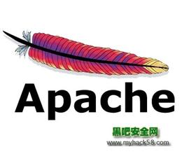
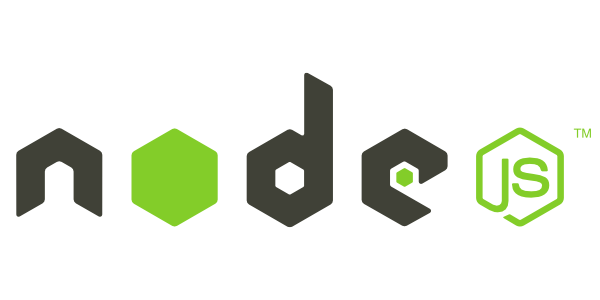
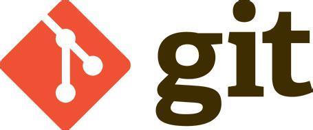
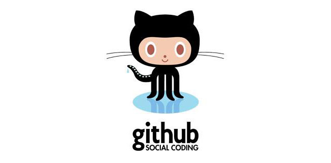

AngularJS[1] 诞生于2009年，由Misko Hevery 等人创建，后为Google所收购。是一款优秀的前端JS框架，已经被用于Google的多款产品当中。AngularJS有着诸多特性，最为核心的是：MVVM、模块化、自动化双向数据绑定、语义化标签、依赖注入等等。
Bootstrap，来自 Twitter，是目前很受欢迎的前端框架。Bootstrap 是基于 HTML、CSS、JAVASCRIPT 的，它简洁灵活，使得 Web 开发更加快捷。 它由Twitter的设计师Mark Otto和Jacob Thornton合作开发，是一个CSS/HTML框架。Bootstrap提供了优雅的HTML和CSS规范，它即是由动态CSS语言Less写成。Bootstrap一经推出后颇受欢迎，一直是GitHub上的热门开源项目，包括NASA的MSNBC（微软全国广播公司）的Breaking News都使用了该项目。 国内一些移动开发者较为熟悉的框架，如WeX5前端开源框架等，也是基于Bootstrap源码进行性能优化而来。
返回主页Apache是世界使用排名第一的Web服务器软件。它可以运行在几乎所有广泛使用的计算机平台上，由于其跨平台和安全性被广泛使用，是最流行的Web服务器端软件之一。它快速、可靠并且可通过简单的API扩充，将Perl/Python等解释器编译到服务器中。同时Apache音译为阿帕奇，是北美印第安人的一个部落，叫阿帕奇族，在美国的西南部。也是一个基金会的名称、一种武装直升机等等。
 返回主页Node.js是一个Javascript运行环境(runtime)。实际上它是对Google V8引擎进行了封装。V8引 擎执行Javascript的速度非常快，性能非常好。Node.js对一些特殊用例进行了优化，提供了替代的API，使得V8在非浏览器环境下运行得更好。
 返回主页ionic是一个用来开发混合手机应用的，开源的，免费的代码库。可以优化html、css和js的性能，构建高效的应用程序，而且还可以用于构建Sass和AngularJS的优化。ionic会是一个可以信赖的框架。
返回主页Git是一款免费、开源的分布式版本控制系统，用于敏捷高效地处理任何或小或大的项目。[1] Git的读音为/gɪt/。 Git是一个开源的分布式版本控制系统，可以有效、高速的处理从很小到非常大的项目版本管理。[2] Git 是 Linus Torvalds 为了帮助管理 Linux 内核开发而开发的一个开放源码的版本控制软件。 Torvalds 开始着手开发 Git 是为了作为一种过渡方案来替代 BitKeeper，后者之前一直是 Linux 内核开发人员在全球使用的主要源代码工具。开放源码社区中的有些人觉得BitKeeper 的许可证并不适合开放源码社区的工作，因此 Torvalds 决定着手研究许可证更为灵活的版本控制系统。尽管最初 Git 的开发是为了辅助 Linux 内核开发的过程，但是我们已经发现在很多其他自由软件项目中也使用了 Git。例如 很多 Freedesktop 的项目迁移到了 Git 上。 返回主页
GitHub 使用 git 分布式版本控制系统，而 git 最初是 Linus Torvalds 为帮助Linux开发而创造的，它针对的是 Linux 平台，因此 git 和 Windows 从来不是最好的朋友，因为它一点也不像 Windows。GitHub 发布了GitHub for Windows，为 Windows 平台开发者提供了一个易于使用的 Git 图形客户端。 GitHub for Windows 是一个 Metro 风格应用程序，集成了自包含版本的 Git，bash 命令行 shell，PowerShell 的 posh-git 扩展。GitHub 为 Windows 用户提供了一个基本的图形前端去处理大部分常用版本控制任务，可以创建版本库，向本地版本库递交补丁，在本地和远程版本库之间同步。微软也通过CodePlex向开发者提供 git 版本控制系统，而 GitHub 创造了一个更具有吸引力的 Windows 版本。
 返回主页